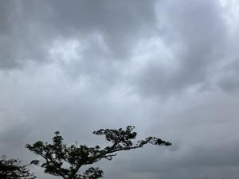
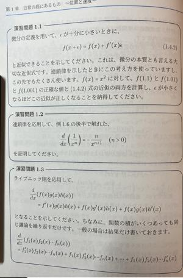
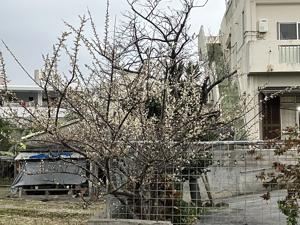

うるがいの話 ある日
最新: 右肩が痛いです【うるがいの話 ある日】とは 一日だけのプログです
『うるがいの話』の最新一日だけのプログで、通信料が少なく経済的だ。カニの画像をクリックすると全ての日付が載る『うるがいの話』サイトを表示します
|
|
【うるがいの話】 うるがい(ｳﾙｶﾞｲ urugai)とは、『もずくがに』の名前でとても大きくなります。 |
|---|---|
|
|
【カミマヤーの話】 猫のことを方言でマヤーといいます。カミマヤー（kamimayaa）とは、神の猫のことです。 |
|
【たながぁの音楽】 たながぁ（ﾀﾅｶﾞｰ tanagaa）とは手長えびのことで、何種類かあり大きいのは車 エビぐらいになります。 |

|
【ぶながぁの話】 ぶながぁ(ﾌﾞﾅｶﾞｰ bunagaa)とは、赤い髪の毛、赤い身体、そして身長は１ｍ２０ｃｍ ぐらい、川の蟹を食べているの目撃された。場所は沖縄県国頭郡大宜味村のと ある村僕の隣近所に住んでいる爺さんから、聞いた話です。 |
|
|
【ギーマの話】 ギーマ(giima)とは、山原の里山に咲くスズランに似た、 花を付けます。実は食べられます、 気が付くと口の周りが紫になっています。 |
2026年02月03日 (火）右肩が痛いです
16:09

朝起きると右肩が痛い、寝違いでもしたのでようか。はぁー、い
ろいろ柔軟体操もしているのですが、回復には時間がかかるよう
です。
初学の編集者がわかるまで書き直した基礎から鍛える量子力学
松浦 壮／著
■本書の内容
基礎となる数理・物理から出発し、丁寧なステップを積み上げな
がら、量子力学のスタンダードな計算を自分の手で実行できるよ
うになることを目指す、独習可能な教科書。
自分の言葉で量子力学を理解したい方、社会に出てから改めて量
子力学を学びたくなった方、量子力学に初めて触れる大学生・高
校生におすすめです。
これらを一通り学び終えた後、読者が「量子力学の基礎を修めた
」と自信を持って言える１冊。
一通り学び終えればでしょう！、導関数なんて久々でっせ、まだ
ワクワクしません。しばらく、読書を続けてみます。下は、参考
のページ。

満開の梅の木を見つけました。
